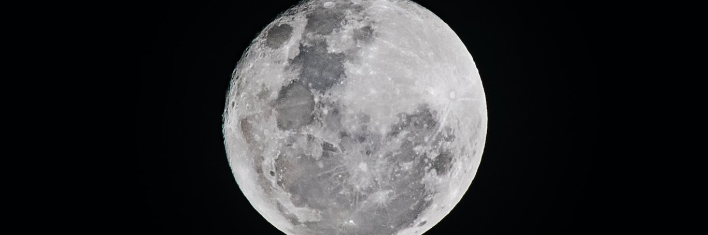
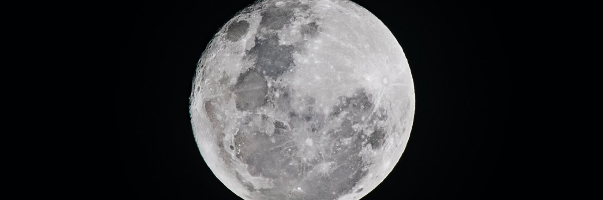
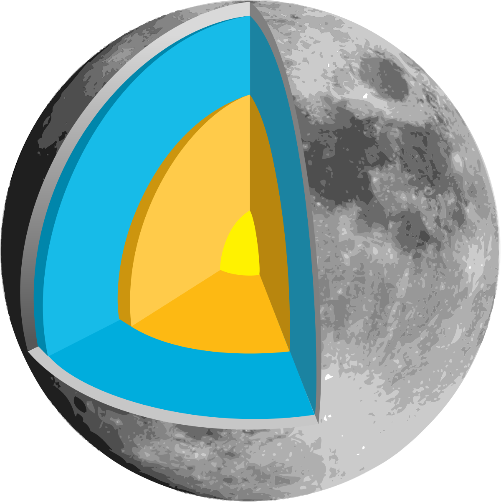
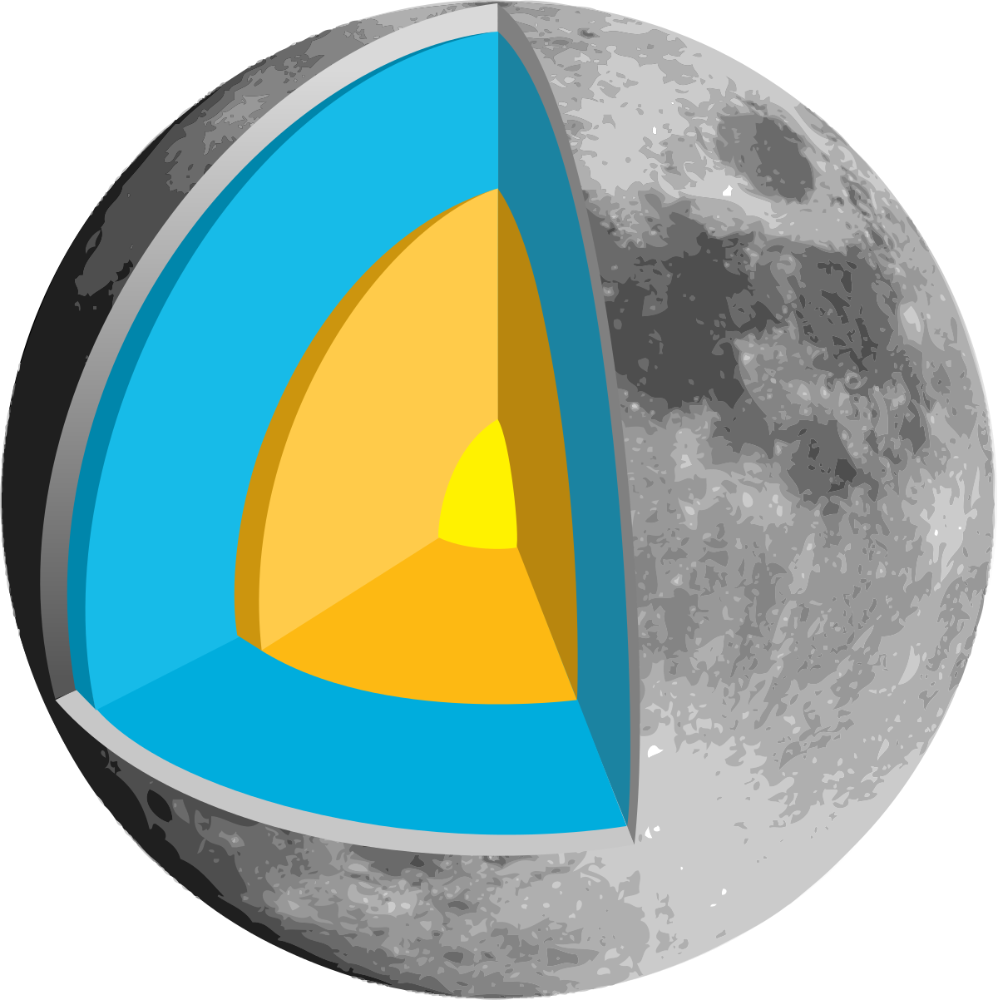

O Sistema Solar, localizado na galáxia Via Láctea, consiste no conjunto de planetas, planetas anões e diversos outros astros do Universo, como asteroides, meteoros, cometas, satélites, entre outros. O Sol é a estrela central desse sistema, exercendo intenso domínio gravitacional sobre os demais corpos celestes.
O Sistema Solar formou-se há cerca de 4,7 bilhões de anos. Contudo, sua origem ainda é questionada, visto que não há uma teoria que satisfaça inteiramente todas as questões que perpassam a formação do Sol e dos planetas. Entretanto, atualmente, há uma teoria mais aceita entre a comunidade científica e astronômica: a teoria da nebulosa solar.
Essa teoria foi formulada inicialmente por René Descartes no ano de 1644, sendo reformulada por Immanuel Kant em 1775 e, depois, por Pierre-Simon de Laplace em 1796. A teoria formulada por Laplace supunha hipoteticamente que o Sol formou-se a partir da rotação de uma nuvem que ao se contrair com influência da gravidade, aumentou sua velocidade entrando, então, em colapso. Assim, o sol formou-se devido à concentração central da nebulosa e os planetas formaram-se a partir dos remanescentes da nuvem molecular em colapso.
Atualmente, o Sistema Solar é oficialmente constituído por oito planetas e cinco planetas anões, sendo eles:
Planetas
Mercúrio
Vênus
Terra
Marte
Júpiter
Saturno
Urano
Netuno
Planetas anões
Ceres
Plutão
Haumea
Makemake
Éris
O campo magnético externo da lua é de cerca de 1-100 nanotesla, que é menos de um centésimo do campo magnético da Terra. A lua não tem um campo magnético dipolo global. Por exemplo, o campo magnético gerado pelas características do gerador terrestre do núcleo de metal líquido mostra apenas a magnetização da crosta terrestre, que pode ter sido obtida no início da história do geradores da Terra ainda em operação. De acordo com outra hipótese, parte da magnetização remanescente pode se originar do campo magnético transitório gerado durante um grande evento de impacto, por meio da expansão da nuvem de plasma criada pelo impacto na presença de um campo magnético ambiente. Isto é apoiado pela localização aparente da magnetização crustal principal perto dos enantiômeros da bacia de impacto principal.
A Lua é constituída de uma crosta (camada sólida superficial, análoga à crosta terrestre), um manto (a camada situada sob a crosta, tal como o manto terrestre) e um núcleo (a camada mais profunda, analogamente ao núcleo terrestre).
A Lua possui um núcleo interno sólido e rico em ferro com 240 km de raio e um núcleo externo fluido composto essencialmente por ferro em fusão e com um raio de aproximadamente 300 km.
O núcleo é envolto por uma camada parcialmente em fusão com um raio de cerca de 500 km.Pensa-se que esta estrutura se tenha desenvolvido a partir da cristalização fracionada de um oceano de magma global, pouco tempo depois da formação da lua, há cerca de 4,5 mil milhões de anos. A cristalização deste oceano de magma teria criado um manto máfico através de precipitação e afundamento dos minerais olivina, piroxena e ortopiroxena
Depois que cerca de três quartos do oceano de magma se cristalizaram, é possível formar o plagioclásio deixado na superfície e formar a crosta. O líquido final cristalizado permanecerá inicialmente entre a crosta e o manto, que contém um grande número de elementos incompatíveis e geradores de calor.
A atmosfera da Lua é tão rarefeita que pode praticamente ser considerada vácuo, sendo a sua massa total inferior a 10 toneladas. A pressão à superfície desta pequena massa é de cerca de 3 x 10−15 atm (0,3 nPa) e varia ao longo do dia lunar. A atmosfera tem origem na desgaseificação e pulverização catódica – a libertação de átomos do solo lunar provocada pelo bombardeio de iões do vento solar.
A ausência de elementos neutros (átomos ou moléculas) como oxigénio, nitrogénio, carbono, hidrogénio e magnésio, que estão presentes no regolito, ainda não é compreendida
SOUSA, Rafaela. "Sistema Solar"; Brasil Escola. Disponível em: https://brasilescola.uol.com.br/geografia/sistema-solar.htm. Acesso em 15 de junho de 2021
 
